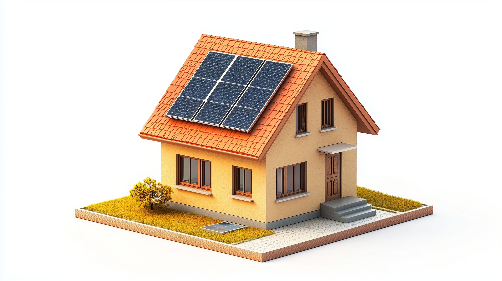
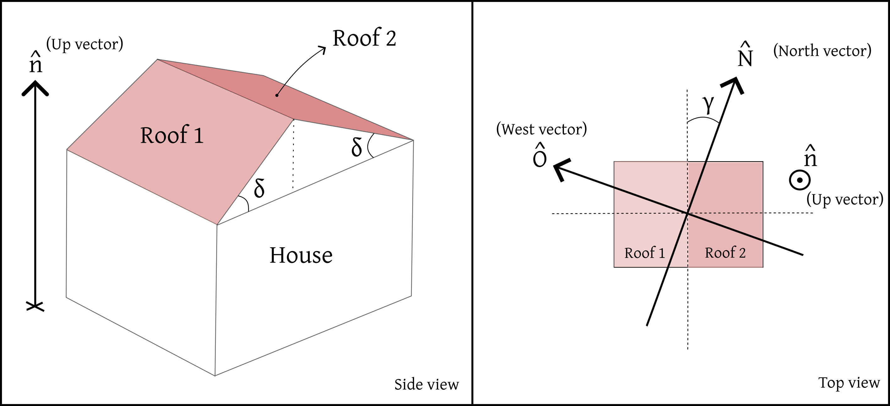
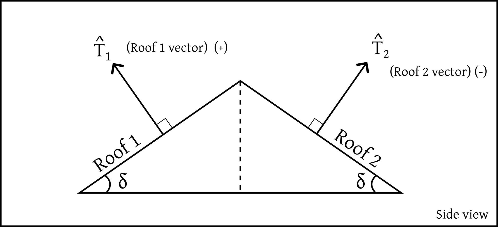
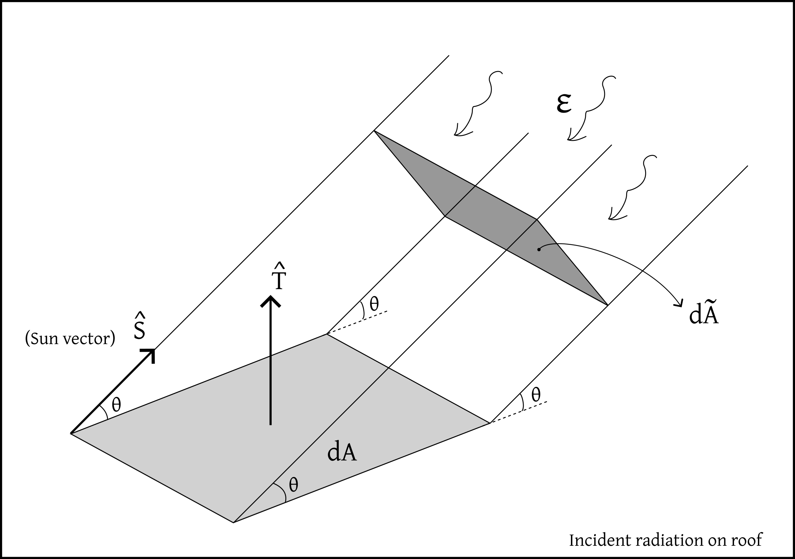
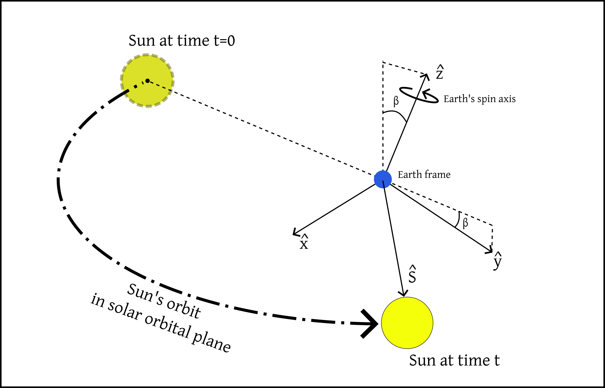
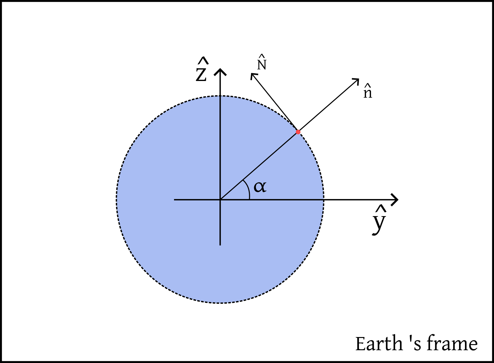
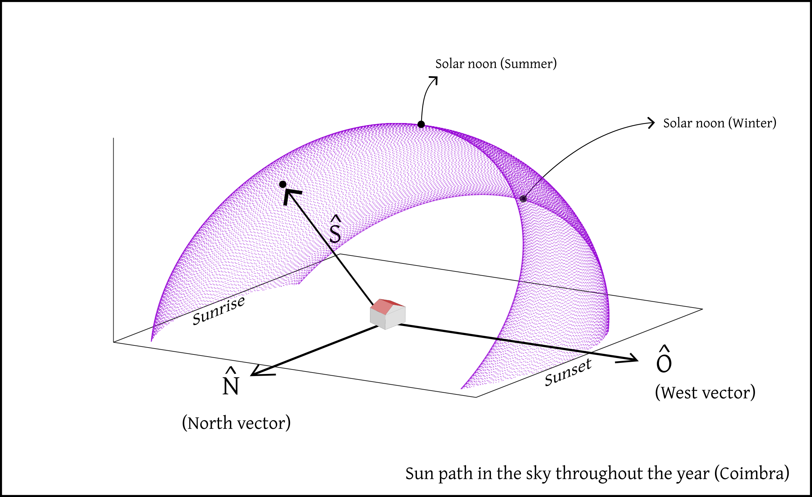
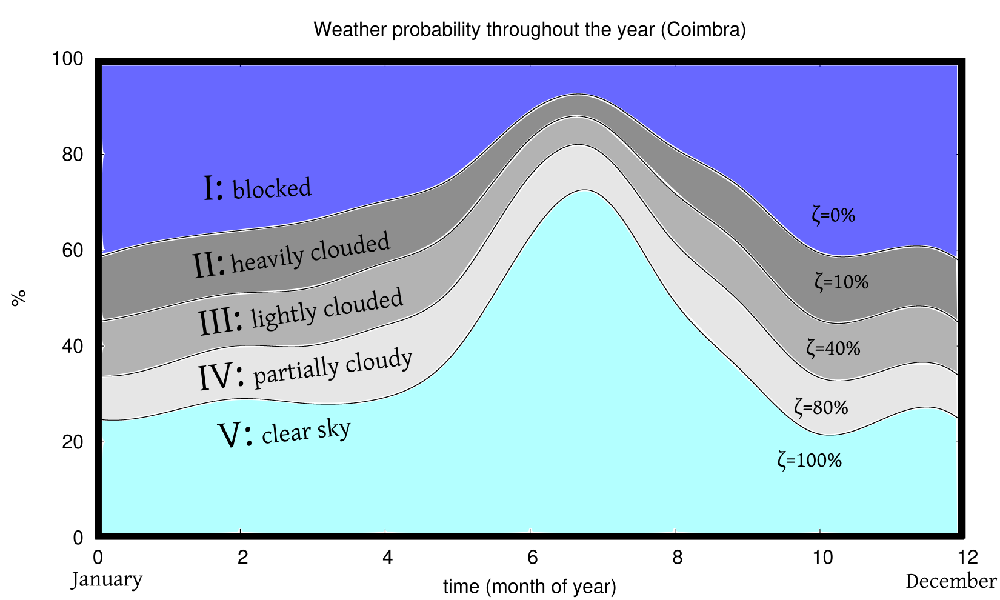
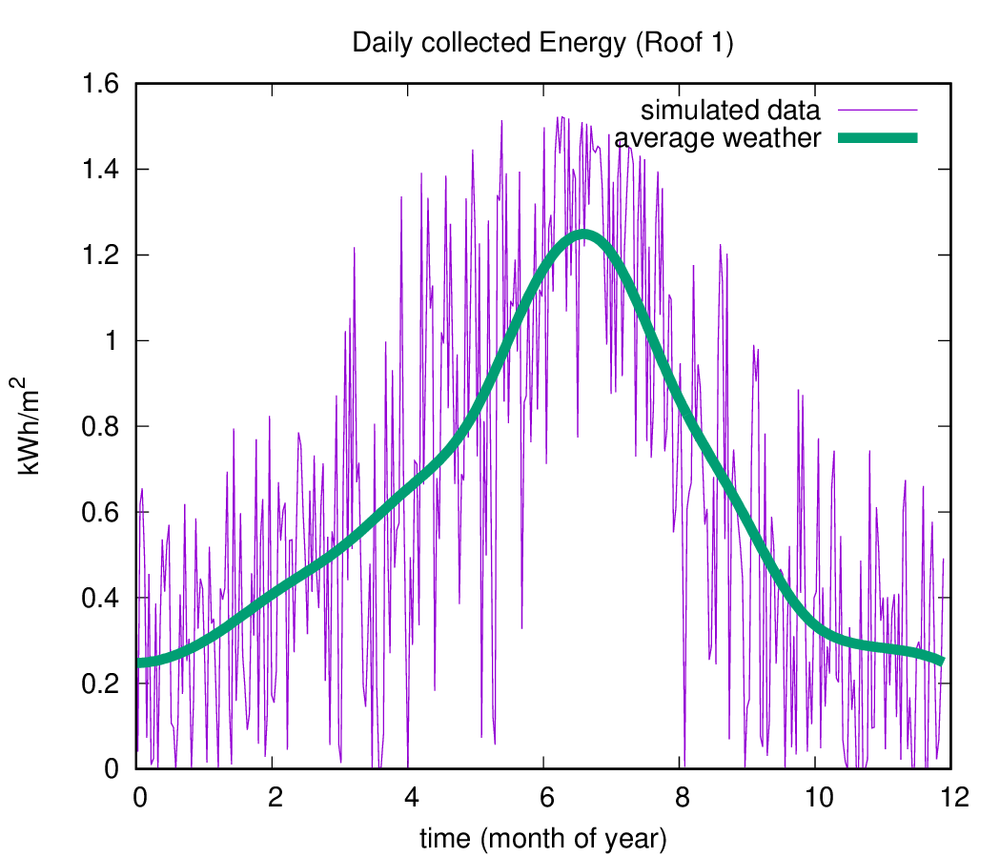
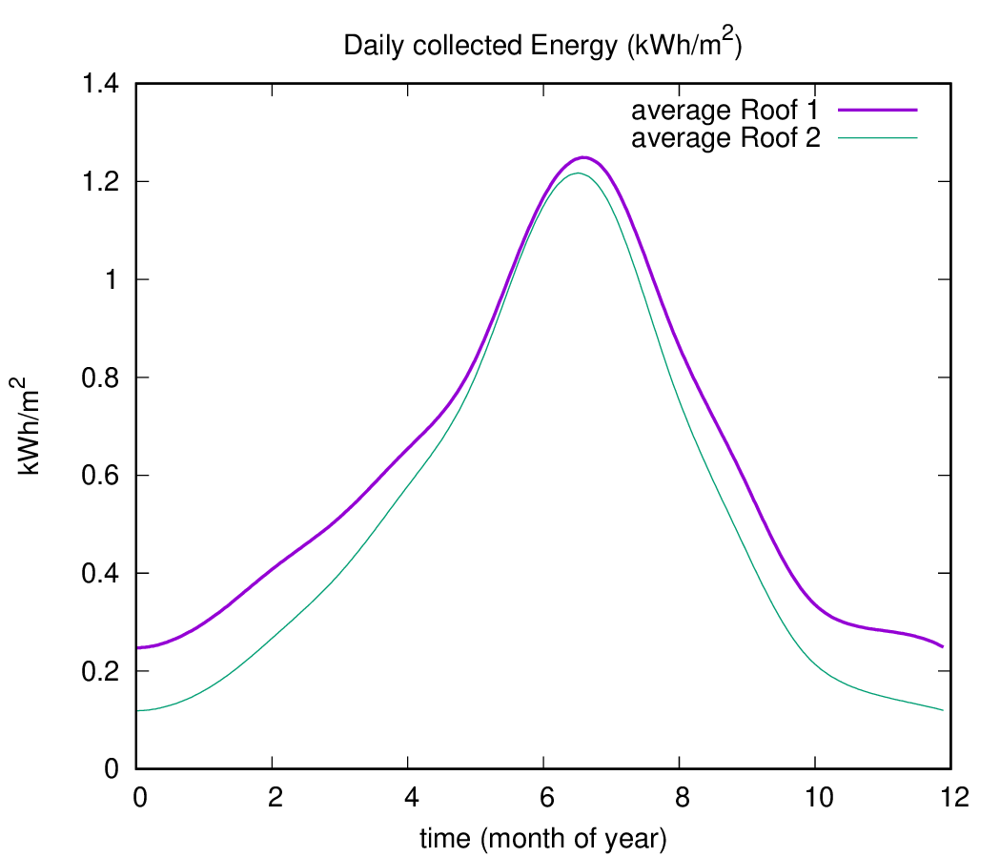

How much energy can I save with solar panels?
First published: August 6th 2025
Author: Pedro Cunha
A friend of mine was considering installing solar panels on his roof, but was not sure how much electricity he could realistically save each year, and whether the investment would pay off. It is a common and practical question, yet getting a precise answer can be surprisingly tricky.
While discussing it, I realised this was a great opportunity to approach a real-world problem from first principles to make meaningful predictions. This webpage is the result of that effort. It aims to be a transparent, technical, and pedagogical exploration of how much solar energy a rooftop can collect across the seasons, depending on location, weather, and orientation.
The goal is not just to estimate savings, but to show how such estimates can be made, using an open approach that anyone with a scientific background can follow, verify, and build upon.

\[ \]
Orientation of the roof
The starting point is the layout and orientation of the roof, where the solar panels would be installed.
Below is a schematic drawing of my friend’s house, seen from the side (left panel) and from above (right panel).

The roof consists of two flat surfaces, which we will call Roof 1 and Roof 2. Each roof section is inclined relative to the horizontal ground at an angle \(\delta\simeq 21^\circ\).
The orientation of the house relative to the cardinal directions is captured by the angle \(\gamma\), which measures the deviation of the roof’s side from the North direction. This angle was measured using satellite images of the house. Both the North and West directions are represented by the unit vectors \(\hat{N}\) and \(\hat{O}\), respectively, where \(\hat{O}\) is perpendicular to \(\hat{N}\).
Since \(\hat{N}\) is a unit vector, its dot product with itself is one: \(\hat{N} \cdot \hat{N} = 1\). The same holds for \(\hat{O}\) and any other unit vector.
To fully describe the 3D orientation of the roofs, we also define a vertical unit vector \(\hat{n}\), which is perpendicular to the ground and orthogonal to both \(\hat{N}\) and \(\hat{O}\). This forms a vector basis \(\{\hat{N}, \hat{O}, \hat{n}\}\), which is useful for expressing any vector in the local coordinate system.
Each roof surface also has its own unit normal vector:
- Roof 1 is associated with \(\hat{T}_1\equiv \hat{T}_+\)
- Roof 2 is associated with \(\hat{T}_2\equiv \hat{T}_-\)
These vectors point perpendicularly outward from the respective roof surfaces, and are illustrated in the diagram below.

After some algebra, and using some basic vector decomposition, each normal vector \(\hat{T}_\pm\) can be written as a linear combination of the basis vectors\(\{\hat{N},\hat{O},\hat{n}\}\):
\[ \hat{T}_\pm = (\cos\delta)\, \hat{n} \,+\,(\mp \sin\delta\sin\gamma)\,\hat{N} \,+\, (\pm\sin\delta\cos\gamma)\,\hat{O}\,.\]
This expression compactly encodes for each roof both the tilt angle \(\delta\) and the orientation angle \(\gamma\), and will be useful in calculating the amount of sunlight that strikes each surface over time.
To simplify the notation, we will omit the indices \(\{1,2\}\) or \(\{+,-\}\) and refer generically to the roof’s normal vector as \(\hat{T}\).
Energy collected on the roof
The next step is to estimate the energy \(E\) collected by a solar panel installed on the roof.
Consider a beam of sunlight arriving from the Sun, as illustrated in the figure below. 
This beam transports an energy flux \(\varepsilon\), defined as the energy \(\mathcal{E}\) delivered per unit time \(t\) and per unit area \(\tilde{A}\), measured perpendicularly to the beam’s direction:
\[ \frac{d\mathcal{E}}{dt\,d\tilde{A}}=\varepsilon\]
However, the actual energy deposited on the roof depends on the angle between the incoming sunlight and the orientation of the roof surface. To account for this, we define a unit vector \(\hat{S}\) pointing in the direction of the Sun.
Since the solar panel lies flat on the roof, the relevant area for collecting sunlight is the projection of the beam’s cross-sectional area \(d\tilde{A}\) onto the panel’s surface area \(dA\). This projection introduces a geometric correction given by the dot product between the roof’s unit normal vector \(\hat{T}\) and the Sun’s direction \(\hat{S}\):
\[ \frac{d\mathcal{E}}{dt\,dA}=\mu\,\varepsilon\,\hat{T}\cdot \hat{S}\]
We have also introduced an additional factor \(\mu\), which acts as a switch, ensuring energy is only collected when sunlight is physically able to reach the panel. It is defined as:
- \(\mu=0\,\,\) if \(\,\,\hat{T}\cdot\hat{S}<0\,\,\); sunlight is hitting the underside of the roof, which is not exposed to the Sun;
- \(\mu=0\,\,\) if \(\,\,\hat{n}\cdot\hat{S}<0\,\,\); the Sun is below the horizon and so it is night time;
- \(\mu=1\) otherwise\(\,\,\); sunlight reaches the exposed surface of the roof.
To estimate the energy flux \(\varepsilon\) reaching the solar panel, we start with the fact that the solar energy arriving just above the Earth’s atmosphere is approximately uniform across the planet. After accounting for atmospheric attenuation, a typical value near the surface on a clear day is \(\varepsilon_o\simeq 1050 W/m^2\).
However, local weather conditions, such as clouds, haze, or fog, can reduce the amount of sunlight that actually reaches the ground. To incorporate this variability, we introduce a weather factor \(\zeta(t) \in [0,1]\), which represents the fraction of solar energy transmitted through the atmosphere at a given time \(t\). On a clear day, \(\zeta \approx 1\), while on a heavily cloudy day \(\zeta\) can be much smaller. The effective energy flux at the surface then becomes \(\varepsilon= \varepsilon_o\,\zeta\).
Next, we must account for the fact that solar panels do not convert all the incident energy into electricity. Their performance is quantified by a conversion efficiency \(\eta \in [0,1]\), defined by the ratio \(E=\eta\,\mathcal{E}\), where \(\mathcal{E}\) is the total incoming energy, and \(E\) is the portion actually converted into usable electric energy.
For typical commercial panels, the efficiency is around \(\eta \approx 0.17\), meaning about 17% of the incident energy is collected.
Putting everything together, the total energy \(E\) collected by a solar panel of surface area \(A\) over the course of a day is given by: \[ E = A\,\eta\,\varepsilon_o \int_{\textrm{day}} \mu(t)\,\zeta(t)\,\hat{T}\cdot\hat{S}(t)\,dt\]
This expression accounts for:
- the orientation of the panel, via \(\hat{T} \cdot \hat{S}(t)\),
- the position of the Sun throughout the day, as captured by the time dependence of \(\hat{S}(t)\),
- the weather conditions, via \(\zeta(t)\),
- and the panel’s own conversion efficiency, \(\eta\).
The factor \(\mu(t)\), as defined earlier, ensures that energy is only collected when the Sun is above the horizon and illuminating the panel.
It remains to model both the weather factor \(\zeta(t)\) and the Sun’s direction \(\hat{S}\) throughout the year, for a given geographic location.
Motion of the Sun in the sky
To estimate how much sunlight reaches a solar panel at any given time, we need to understand how the Sun moves across the sky throughout the day and year. This motion can be modeled from first principles, starting with the Earth’s orbit around the Sun.
Although the Earth orbits the Sun in an approximately circular path within a plane, known as the solar orbital plane. However, from an Earth-centered frame, the Sun seems to orbit with an angular velocity \(\Omega=2\pi/year\) (see image below).

We can begin by describing this apparent motion in a Cartesian coordinate system \((X,Y,Z)\) aligned with the solar orbital plane and centered at the Earth’s center. In this coordinate system, the Sun’s unit direction vector, denoted by \(\hat{S}'\), evolves as: \[ \hat{S}'=\begin{pmatrix} \,\,\,\sin\Omega\,t\\ -\cos\Omega\,t\\ 0 \end{pmatrix}_{\textrm{Solar plane coord.}} \] where the prime indicates that \(\hat{S}'\) is expressed in the solar orbital plane frame. The time \(t=0\) corresponds to the Perihelion, which approximately corresponds to January 2nd.
To express the Sun’s direction in the Earth-comoving frame, which is the one relevant for observers on the ground, we must apply two active rotations to \(\hat{S}'\):
Axial tilt: The Earth’s rotation axis is tilted by an angle \(\beta \approx 23.44^\circ\) relative to the axis perpendicular to the solar plane. This is implemented via a rotation about the x-axis.
Daily rotation: The Earth spins about its axis (the z-axis in our frame) with angular velocity \(\omega = 2\pi/\text{day}\), leading to the daily motion of the Sun across the sky, and also to the day-night cycle. This is a rotation about the z-axis.
Combining these two transformations gives the Sun’s direction vector \(\hat{S}(t)\) in the Earth-comoving frame: \[ \hat{S} = \mathcal{R}_z(-\omega t)\,\,\mathcal{R}_x(\beta)\,\,\hat{S}'\,\]
where \(\mathcal{R}_x(\theta)\) and \(\mathcal{R}_z(\theta)\) are standard 3D rotation matrices:
\[ \mathcal{R}_x(\theta)=\begin{pmatrix} 1 & 0 & 0\\ 0 & \cos\theta & -\sin\theta\\ 0 & \sin\theta & \,\,\cos\theta \end{pmatrix} \qquad\qquad \mathcal{R}_z(\theta)=\begin{pmatrix} \cos\theta & -\sin\theta & 0\\ \sin\theta & \,\,\cos\theta & 0\\ 0 & 0 & 1 \end{pmatrix} \]
To connect the Sun’s position to a specific location on Earth, such as a solar panel installation, we need to obtain the local directional vectors at that location. Consider the image below, which shows a representation of Earth’s comoving frame, and a pink point on the surface with latitude \(\alpha\), which is the house’s location. Since my friend’s house is located in the city of Coimbra, we shall consider \(\alpha\simeq 40.21^\circ\).

The North and vertical vectors at the house location can then be obtained in this frame:
The North direction \(\hat{N}\) is obtained by rotating the vertical axis \(\hat{z}\) (which points along the Earth’s spin axis) by the latitude angle \(\alpha\): \[\hat{N}= \mathcal{R}_x(\alpha)\,\hat{z}=\mathcal{R}_x(\alpha)\, \begin{pmatrix} 0\\ 0\\ 1 \end{pmatrix}\]
The local vertical direction \(\hat{n}\) (normal to the ground) is similarly given by rotating the \(y\)-axis: \[\hat{n}= \mathcal{R}_x(\alpha)\,\hat{y}=\mathcal{R}_x(\alpha)\, \begin{pmatrix} 0\\ 1\\ 0 \end{pmatrix}\]
The West direction \(\hat{O}\) is perpendicular to both \(\hat{n}\) and \(\hat{N}\) and is given by the cross product \(\hat{O}= \hat{n}\times \hat{N}\).
These three vectors \(\{\hat{N}, \hat{O}, \hat{n}\}\) define a local basis at the observation point, and allow us to compute all relevant dot products with the Sun vector \(\hat{S}\), such as those used in solar energy calculations.
We now have a complete model of the Sun’s apparent motion in the sky as a function of time \(t\), from the perspective of a fixed observer located in the city of Coimbra. The figure below shows the Sun’s trajectory across the local sky throughout the year, above the horizon.

Modeling the weather factor \(\zeta\)
The next step is to model the weather factor \(\zeta(t)\), which is a time-dependent function that accounts for the reduction in solar radiation flux due to atmospheric absorption and scattering, such as from clouds, haze, or fog.
Accurately modeling \(\zeta\) is a challenging task, as it depends on complex, location-specific meteorological dynamics. However, we can still obtain a reasonable approximation using historical weather data.
The website Weather Spark provides detailed climate statistics for the city of Coimbra, including the probability of cloud cover throughout the year. Using this data, I have constructed the following plot to represent an effective approximation of the weather factor over the course of the year:

The plot is divided into five distinct regions, each corresponding to a different degree of cloudiness. The width of each region at a given point in the year reflects the probability of that type of weather occurring on any given day.
For example, in January, the likelihood of having a very cloudy sky is high, which is why regions I and II (representing heavy cloud cover) dominate. In contrast, during August, the probability of clear skies is much greater, which is reflected by the large area occupied by region V.
For each of the five weather regions (I to V), we assign an effective weather factor \(\zeta\), which quantifies the fraction of solar energy that reaches the Earth’s surface. These values range from 1.0 (100%) for clear skies to 0.0 (0%) for very thick and heavily clouded skies. While this approach is very simplified, it provides a reasonable approximation for our purposes.
In practice, the value of \(\zeta\) at any given time \(t\) is determined stochastically: a region (I–V) is selected at random, with probability weights based on the seasonal cloud cover distribution shown in the previous plot. Once chosen, the corresponding \(\zeta\) value is held constant over a 4-hour interval, reflecting the typical timescale over which local weather conditions remain stable. After each time interval, the process is repeated to update the value of \(\zeta\).
Simulating Energy collection
Now that we have the full setup, we can begin estimating how much solar energy each section of the roof can collect on a daily basis over the course of a typical year.
In the plot below, the pink curve shows the daily energy (in kWh) collected by one square meter of solar panel installed on Roof 1. This curve incorporates stochastic weather variations, based on the probabilistic model discussed earlier.

For comparison, the green curve represents a smoothed estimate, computed using an effective average weather factor \(\zeta\). This average is obtained by weighting the typical values of \(\zeta\) for each weather category (Regions I–V) according to their probability at a given time of year. As expected, this curve is much smoother and reflects the mean trend of solar energy collection.
However, the pink curve exhibits significant fluctuations, which can have a substantial impact on the total energy accumulated over the year, and hence on the estimated energy savings. This highlights an important point:
- Relying solely on an average-weather model can significantly misrepresent the actual yearly savings, as it fails to account for the variability inherent in solar energy production.
Nonetheless, the average-weather model remains useful to identify general trends. In particular, it reveals that Roof 1 consistently collects more solar energy than Roof 2, on average. This can be seen in the next plot, which shows the daily energy collected by each roof, assuming the effective average weather factor \(\zeta\).

Although this model smooths out short-term fluctuations, it provides a clear comparison between the two roof orientations and their overall performance in solar energy generation throughout the year.
Energy savings
Based on the previous simulations, roof 1 alone is expected to collect approximately 224 kWh per square meter over the course of a year. At a market electricity price of €0.17/kWh (VAT included), this translates to an estimated €38 of annual savings per square meter.
Solar panels are typically sold as units. Assuming each panel covers 1.6 m\(^2\), installing 8 panels would correspond to about €487 in yearly energy savings, under ideal conditions where all the collected energy is consumed.
However, in practice, not all the solar energy produced is used. The actual savings depend on the household’s daily consumption pattern. If energy is produced at a time when it is not being consumed, and if there is no way to store it, then it gets wasted.
Using real electricity consumption data from the household in question, I have performed a more detailed analysis and found that, on average, around 33% of the energy collected would go unused due to this mismatch. Taking that into account, the effective annual savings drop to about €327 for 8 panels, which is still pretty good.
Given an installation cost of approximately €3 500, this leads to a payback time of about 10 years.
Considering that modern solar panels have a useful lifespan of around 26 years, this still results in over €5 000 of savings across the solar panels lifetime, which is a solid long-term investment.
A Note on Battery Storage
I also carried out an additional analysis to explore how these numbers would change when a battery storage system is included. A battery allows surplus solar energy to be stored and used later, potentially reducing losses.
However, this improvement comes with trade-offs, since batteries have:
- limited storage capacity,
- finite charge/discharge rates,
- and, most importantly, fairly high installation costs.
For the specific case analysed, the added savings from the battery system did not justify its cost, given current market prices. The overall system remained more cost-effective without it.
To keep this webpage accessible and focused, I have chosen not to include the full technical details of the battery modeling and household energy usage analysis. However, if you are interested in a further details, whether you are from academia, the energy sector, or simply curious, feel free to get in touch. I would be happy to discuss the methodology further.